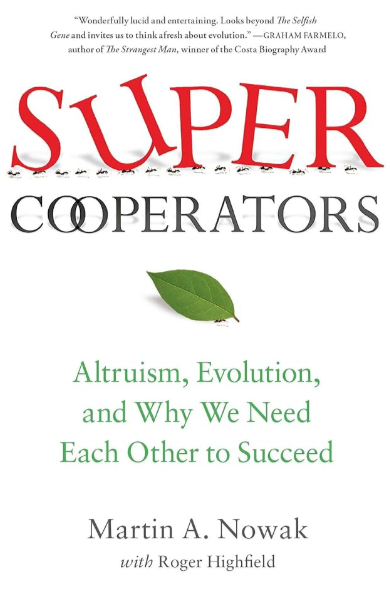

Top 5 de libros recomendados para curiosos por la ciencia
Publicado el 30 de diciembre de 2025
La ciencia no solo se aprende en el laboratorio o en la universidad. También se construye leyendo, cuestionando y conectando la ciencia con la vida cotidiana.
Este Top 5 reúne libros académicos, técnicos y de lectura, que han sido importantes en mi formación como microbióloga, divulgadora científica e ilustradora científica en formación.
Son libros pensados no solo para estudiantes, sino también para personas curiosas por entender el mundo microscópico y su relación con la salud, la evolución y la sociedad.
Biología de los microorganismos – Brock

Biología de los microorganismos de Brock es uno de los libros más completos y utilizados en microbiología a nivel universitario. A lo largo de sus ediciones se ha consolidado como una obra de referencia para comprender el mundo microbiano desde una visión integral.
El libro aborda de manera clara temas como:
- Estructura y metabolismo microbiano
- Genética, genómica y virología
- Diversidad y evolución microbiana
- Ecología microbiana y microbiología ambiental
- Interacción microorganismo–huésped
- Enfermedades infecciosas y salud pública
✨ ¿Por qué lo recomiendo? Porque permite entender la microbiología como una ciencia conectada con la evolución, el ambiente y la salud humana. Es ideal para construir bases sólidas y comprender cómo los microorganismos influyen en casi todos los aspectos de la vida.
Ingeniería genética – Herraéz

Este libro es una excelente introducción a la ingeniería genética, pensada para comprender cómo se manipula el material genético y cómo estas herramientas se aplican en la investigación científica y la biotecnología.
🔬 ¿Qué temas aborda?
- Conceptos esenciales de ADN y ARN
- Dogma central de la biología
- Mutaciones y tipos de mutaciones
- Organización y estructura de los cromosomas
- Técnicas de ingeniería genética como clonación, ADN recombinante y uso de vectores
Desde una mirada visual, este libro resulta muy valioso porque ayuda a traducir procesos complejos en esquemas mentales claros, algo fundamental para el aprendizaje y la comunicación científica.
✨ ¿Por qué lo recomiendo? Porque conecta la genética con la práctica de laboratorio y sirve como puente entre microbiología, biología molecular y biotecnología.
Los primeros mil días – Roger Thurow

Este libro aborda la importancia de los primeros 1000 días de vida, desde la gestación hasta los dos años, como una etapa crítica para el desarrollo humano.
A través de historias reales y datos científicos, el autor muestra cómo la nutrición, el acceso a alimentos seguros y las condiciones del entorno influyen en el desarrollo físico y cognitivo a largo plazo.
✨ ¿Por qué lo recomiendo? Porque ayuda a comprender que la ciencia no solo ocurre en el laboratorio, sino también en decisiones sociales, políticas y económicas que impactan directamente en la salud.
Supercooperadores – Martin Nowak

Este libro propone una forma diferente de entender la evolución. Su autor, Martin Nowak, es biólogo evolutivo y matemático, profesor en Harvard, especializado en el estudio de la cooperación desde un enfoque científico y matemático.
Idea central
Durante mucho tiempo se ha explicado la evolución principalmente desde la competencia. Nowak plantea que la cooperación es una de las fuerzas evolutivas fundamentales, al mismo nivel que la selección natural.
Para demostrarlo, utiliza:
- Modelos matemáticos
- Teoría de juegos
- Análisis evolutivo
🦠 Relación con la microbiología
En microbiología, la cooperación es clave en procesos como:
- Biofilms bacterianos
- Quorum sensing
- Intercambio genético
- Microbiota
✨ ¿Por qué lo recomiendo? Porque cambia la forma de ver la evolución y permite comprender a los microorganismos como comunidades interconectadas, no como organismos aislados.
El origen de las especies – Charles Darwin

Este libro es uno de los pilares fundamentales de la biología. Aunque fue escrito en el siglo XIX, sus ideas siguen siendo esenciales para comprender la vida.
🧬 Aporte a la microbiología
La teoría de la evolución permite entender:
- La diversidad microbiana
- La adaptación
- La resistencia antimicrobiana
- La variabilidad genética
✨ ¿Por qué lo recomiendo? Porque no es posible comprender la microbiología moderna sin entender la evolución.
✨ Reflexión final
Los libros son una herramienta muy poderosa: nos conectan con el conocimiento, con otras personas y con nuevas formas de entender el mundo. Lo más lindo del conocimiento es que nunca se termina; siempre está en construcción. Hay una frase que me gusta mucho y que resume muy bien este proceso: “Entre más aprendo, más me doy cuenta de lo poco que sé.” Como seres humanos, y especialmente como personas que hacemos ciencia, nuestra labor no es solo aprender, sino transmitir ese conocimiento a las nuevas generaciones, compartirlo y hacerlo accesible. Espero que esta lista de libros les sirva como punto de partida para despertar la curiosidad, hacer preguntas y seguir aprendiendo. ¡Feliz lectura!